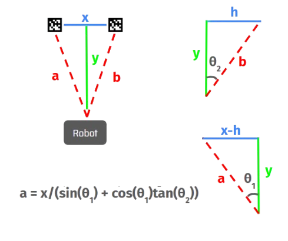
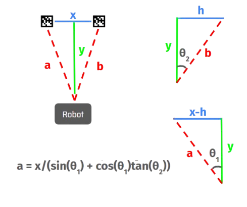

Differential Swerve Drive Module
The 2024 FRC game involved scoring rings into different-sized goals. As the team's lead programmer, I managed a team of 6 to ensure all subsystems were complete.

Vision Processing:
Our robot’s front facing camera was connected to a Raspberry Pi running a vision model called PhotonVision, which could return angles describing the robot’s orientation from certain targets. Using these angles, we developed a formula that could describe the robot’s distance from these targets. This value automatically adjusted the arm’s angle based on a function derived from test data to score game pieces from any distance.
 

Code Structure:

Wiring Diagram: